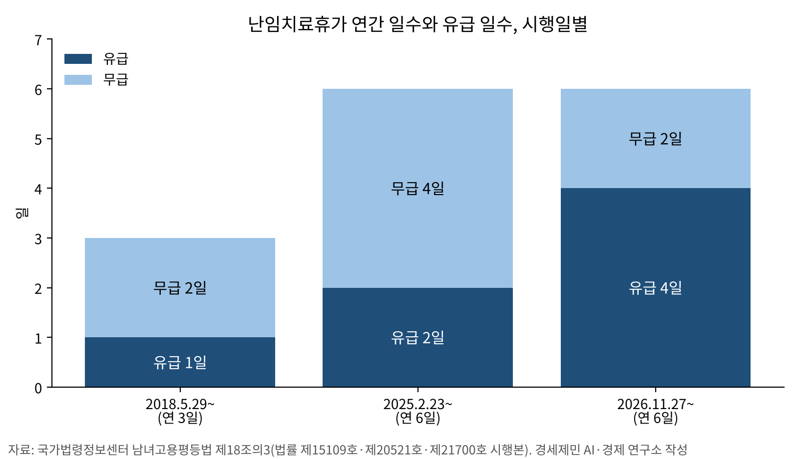
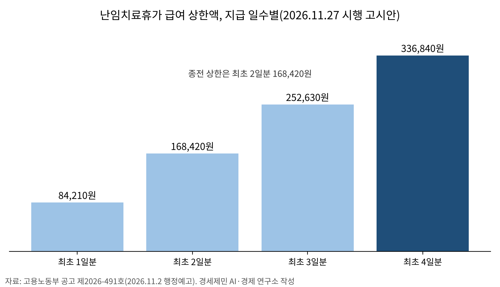
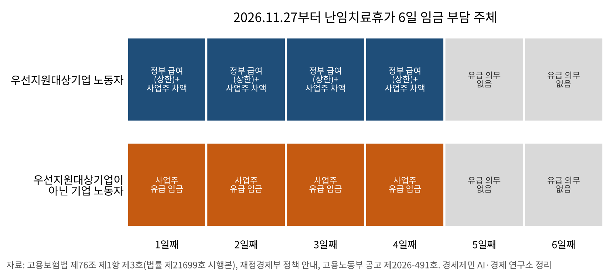
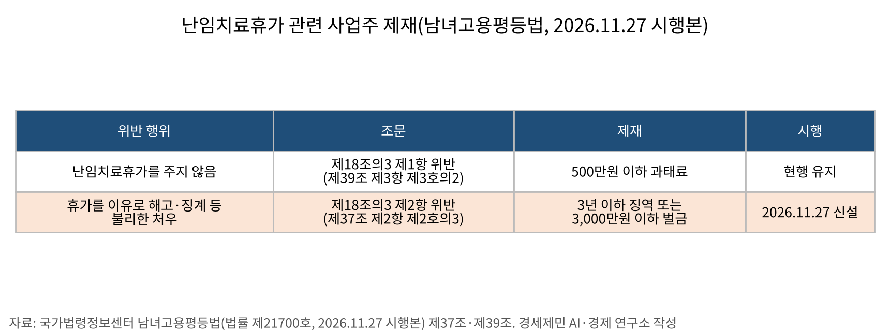

[고용 브리핑] 11월 27일 난임치료휴가 유급 4일, 정부 급여 상한 336,840원(고시안)
연 6일 가운데 유급 4일, 무급 2일
정부 급여 대상은 우선지원대상기업 노동자
불리한 처우에 3년 이하 징역 또는 3,000만원 이하 벌금
상한액 고시안 의견 접수 마감 11월 23일
AI경제저널=김갑봉 기자 | 11월 27일부터 난임치료휴가의 유급 기간이 최초 2일에서 최초 4일로 늘어난다. 연간 휴가 일수는 6일 그대로다. 같은 날 고용보험의 난임치료휴가 급여 지원도 최초 4일로 는다. 급여 상한액은 현행 168,420원에서 336,840원으로 오를 예정이다(고시안).
근거는 법률 두 건과 고시 개정안 한 건이다. 정부는 2026년 5월 26일 「남녀고용평등과 일·가정 양립 지원에 관한 법률」(이하 남녀고용평등법)과 「고용보험법」 개정 법률을 함께 공포했다. 두 법 모두 공포 후 6개월이 지난 날부터 시행한다. 고용노동부는 11월 2일 상한액 고시 개정안을 행정예고했다.
난임 시술로 태어나는 아이도 늘었다. 보건복지부는 5월 14일 2025년 난임부부 시술비 지원사업으로 태어난 아이가 48,981명이라고 밝혔다. 복지부가 쓴 전체 출생아 254,457명(국가데이터처 2026년 2월 자료)의 19.2%다. 2022년 23,122명(9.3%)과 견주면 3년 사이 두 배를 넘었다.

개정 조문과 고시안
남녀고용평등법 제18조의3 제1항은 사업주가 난임치료휴가를 청구한 노동자에게 연간 6일 이내의 휴가를 주고 최초 4일을 유급으로 한다고 정했다. 개정 법률 번호는 제21700호이고, 종전 조문은 「최초 2일은 유급」이었다. 사업 운영에 중대한 지장이 있으면 노동자와 협의해 시기를 바꿀 수 있다는 단서는 그대로다.
부칙 제2조는 시행 당시 이미 휴가를 썼거나 쓰고 있는 사람에게도 새 조문을 적용한다고 적었다. 다만 시행 전에 쓴 휴가 기간은 최초 4일을 셀 때 넣는다. 시행 전 같은 연간 기간에 2일을 쓴 노동자는 시행 뒤 유급이 2일 남는다(연구소 적용 예). 4일 이상 쓴 노동자는 새로 생기는 유급일이 없다. 법과 시행령(제9조의3)은 「연간」의 기준일을 따로 적지 않았다.
고용보험법 제76조 제1항 제3호는 정부가 급여를 주는 기간을 난임치료휴가 「최초 4일」로 고쳤다. 개정 법률 번호는 제21699호다. 단서는 그대로 「우선지원 대상기업인 경우로 한정」이다. 부칙은 시행 이후 쓰는 유급 휴가 기간부터 새 조문을 적용한다고 정했다.
고용노동부 공고 제2026-491호(고시 개정안)는 난임치료휴가 급여 상한을 지급 일수별로 담았다. 최초 4일분 336,840원, 3일분 252,630원, 2일분 168,420원, 1일분 84,210원이다. 하루 상한 84,210원은 바뀌지 않고 지원 일수만 늘어난다. 고시안의 시행일은 11월 27일이고, 이 고시 자체의 유효기간은 12월 31일까지다.

유급 일수 변천, 2018~2026년
난임치료휴가는 2017년 11월 28일 공포한 개정 남녀고용평등법(법률 제15109호)으로 생겼다. 2018년 5월 29일 시행 때는 연간 3일, 그 가운데 최초 1일이 유급이었다.
첫 개정은 2024년 10월 22일 공포, 2025년 2월 23일 시행이다. 연간 일수가 6일로, 유급이 최초 2일로 늘었다(법률 제20521호). 같은 날 시행한 개정 고용보험법(법률 제20519호)이 난임치료휴가 최초 2일을 급여 지급 기간에 넣었다.
이번은 신설 뒤 두 번째 개정이다. 연간 일수는 6일로 두고 유급만 2일 늘렸다. 2018년 시행본과 이번 시행본을 견주면 약 8년 6개월 사이 유급 일수는 1일에서 4일로 네 배가 됐다. 연간 휴가 가운데 유급 비중은 3분의 1에서 3분의 2가 됐다.
법 밖의 손질도 있었다. 고용노동부는 2025년 8월 행정해석을 바꿔 시술 전 난임검사와 배란유도 기간도 휴가 범위에 넣었다. 2026년 5월에는 급여 신청 때 진단서 대신 보건복지부의 「난임부부 시술비 지원 결정통지서」를 낼 수 있게 했다.
우선지원대상기업 여부로 갈리는 급여 부담
같은 4일 유급이라도 돈을 대는 주체는 우선지원대상기업인지에 따라 다르다. 고용보험법 제76조는 정부 급여를 우선지원대상기업 노동자로 한정했다. 정부 안내(『2026년 하반기부터 이렇게 달라집니다』)는 정부 상한과 통상임금의 차액을 사업주가 준다고 적었다. 휴가와 급여 대상은 남녀 노동자 모두다. 이를 연구소가 두 갈래로 정리하면 다음과 같다.
- 우선지원대상기업 노동자: 정부가 휴가 시작일 기준 통상임금을 4일분 상한 336,840원(고시안) 안에서 주고, 나머지 차액은 사업주가 준다
- 우선지원대상기업이 아닌 기업 노동자: 정부 급여 없이 사업주가 유급 4일분 임금을 준다
나머지 2일은 법이 유급을 의무로 정하지 않았다.
정부 급여를 받으려면 고용보험 피보험 단위기간이 휴가가 끝난 날까지 합산 180일 이상이어야 한다(고용보험법 제75조 제1호). 신청은 휴가를 시작한 날 이후 1개월부터 휴가가 끝난 날 이후 12개월 안에 한다(같은 조 제2호).

과태료에 형사 벌칙 추가
남녀고용평등법은 전부터 난임치료휴가를 주지 않은 사업주를 500만원 이하 과태료 대상으로 정했다(제39조 제3항 제3호의2). 이 호는 2026년 9월 18일 시행본과 11월 27일 시행본이 같다. 고용노동부 보도자료 붙임도 제1항 위반에 500만원 이하 과태료를 단다고 안내했다.
휴가를 이유로 한 해고·징계 등 불리한 처우는 제18조의3 제2항이 금지했지만, 현행 제37조 제2항에는 이 조항을 어긴 경우의 호가 없다. 법률 제21700호는 제37조 제2항에 제2호의3을 새로 넣었다. 제18조의3 제2항을 어겨 불리한 처우를 한 사업주는 3년 이하 징역 또는 3,000만원 이하 벌금에 처한다. 육아휴직이나 배우자 출산전후휴가를 이유로 한 불리한 처우와 같은 항(제2호의2·제3호)이라 벌칙 수준도 같다.
제18조의3 제3항은 사업주가 청구 업무에서 알게 된 사실을 노동자 뜻에 반해 누설하지 못하게 했다. 고용노동부는 보도자료에서 이 비밀유지 의무에 더해 불리한 처우 금지에 대한 벌칙 규정이 11월 27일부터 시행된다고 밝혔다.

정부 설명과 남은 절차
고용노동부는 8월 23일 「사업주와 인사담당자를 위한 난임치료휴가 및 급여제도 활용 가이드」를 냈다. 조정숙 고용지원정책국장은 같은 날 보도자료에서 「임신·출산 연령이 높아지면서 난임치료휴가에 대한 정부 지원 필요성이 더욱 커지고 있다」고 밝혔다.
보도자료는 가이드에 실린 기업 사례 셋을 소개했다. 롯데쇼핑 백화점사업부는 휴가 이름을 「가족계획 휴가」로 바꿨다. 에코프로는 부서장을 거치지 않고 인사팀만 신청 내역을 보게 했다. 인천국제공항보안은 「공가」 항목으로도 신청할 수 있게 했다.
남은 절차는 고시 확정이다. 고용노동부 고용문화개선정책과는 11월 23일까지 고시안 의견을 받는다. 고용노동부가 고시안대로 확정하면 11월 27일부터 상한 336,840원을 적용한다.
참고문헌
법령
- 「남녀고용평등과 일·가정 양립 지원에 관한 법률」(법률 제21700호, 2026.5.26. 공포, 2026.11.27. 시행) 제18조의3·제37조·제39조·부칙, 국가법령정보센터, https://www.law.go.kr/법령/남녀고용평등과일ㆍ가정양립지원에관한법률/(21700,20260526)
- 「고용보험법」(법률 제21699호, 2026.5.26. 공포, 2026.11.27. 시행) 제76조·부칙, 제75조는 현행(2026.9.18. 시행본), 국가법령정보센터, https://www.law.go.kr/법령/고용보험법/(21699,20260526)
- 「남녀고용평등과 일·가정 양립 지원에 관한 법률」(법률 제21476호, 2026.9.18. 시행본) 제18조의3·제37조·제39조, 같은 법 시행령(대통령령 제36589호) 제9조의3, 국가법령정보센터
- 「남녀고용평등과 일·가정 양립 지원에 관한 법률」(법률 제20521호, 2025.2.23. 시행본)·(법률 제15109호, 2018.5.29. 시행본) 제18조의3, 국가법령정보센터
- 「고용보험법」(법률 제20519호, 2025.2.23. 시행본) 제76조·부칙, 국가법령정보센터
공식 발표자료
- 「출산전후휴가 급여등 상한액 고시」 개정안 행정예고(고용노동부 공고 제2026-491호), 고용노동부, 2026.11.2.
- 「난임치료휴가, 11월부터 '유급기간 4일로 확대'」 보도자료와 붙임 「난임치료휴가급여 개요 및 제도개선 사항」, 고용노동부, 2026.8.23., https://www.moel.go.kr/news/enews/report/enewsView.do?news_seq=19813
- 「사업주와 인사담당자를 위한 난임치료휴가 및 급여제도 활용 가이드」, 고용노동부, 2026.8.
- 「국가와 지방자치단체 난임부부 지원으로 2025년도 48,981명 태어나」 보도참고자료, 보건복지부, 2026.5.14., https://www.mohw.go.kr/board.es?mid=a10503010100&bid=0027&act=view&list_no=1490515
- 「난임치료휴가급여 지원 기간 확대」, 『2026년 하반기부터 이렇게 달라집니다』, 재정경제부, 2026., https://whatsnew.mofe.go.kr/mec/ots/dif/view.do?difSer=5e74bf92-50c2-419c-9b43-745406c5e51c&temp=2026&temp2=HALF002
[도표 출처]
- [도표1] 국가법령정보센터 남녀고용평등법 시행본별 제18조의3, [도표2] 고용노동부 공고 제2026-491호, [도표3] 고용보험법 제76조(법률 제21699호 시행본)·재정경제부 「난임치료휴가급여 지원 기간 확대」·고용노동부 공고 제2026-491호, 연구소 정리, [도표4] 남녀고용평등법(2026.11.27. 시행본) 제37조·제39조. 모두 경세제민 AI·경제 연구소 작성
※ 이 기사는 인공지능기자 위민아이(Wemin_AI)와 협력해 작성했습니다.
관련기사
- [농업 브리핑] 남는 쌀 1.9%에 벼 감산, 20년 새 30% 줄어든 논의 홍수·식량 기능
- [재정 브리핑②] 국세 8월까지 69조원 더 걷혀, 내년 예산은 법인세 216조원에 기대
- [주택공급 브리핑①] 수도권 착공 목표 26만8000호, 정부 전망도 최대 5만호 미달
- [대미투자 브리핑①] 대미 전략투자 첫 송금 24억달러, 1·2호 사업 규모가 한도 2000억달러의 최대 71%
저작권자 © AI경제저널 무단전재 및 재배포, AI학습 및 활용 금지